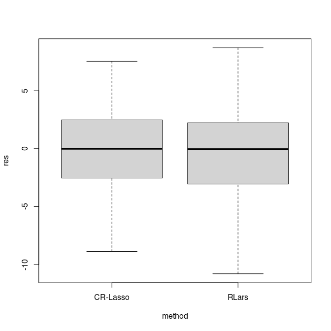

demo
demo.RmdA simulated dataset
Outlier detection
Detect outliers using DDC (Rousseeuw and Van Den Bossche, 2018).
fit1 <- cellWise::DDC(x)
#>
#> The input data has 200 rows and 50 columns.
p1 = cellWise::cellMap(fit1$stdResid, columnlabels = c(1,rep(" ",dim(x)[2]-2),dim(x)[2]), rowlabels = c(1,rep(" ",dim(x)[1]-2),dim(x)[1]), columnangle = 0,
rowtitle = "Observations", columntitle = "Variables", sizetitles = 2,adjustrowlabels = 0.5, adjustcolumnlabels = 0.5)+
theme(axis.text.x = element_text(size = 12),
axis.text.y = element_text(size = 12),
axis.title.x = element_text(size = 14),
axis.title.y = element_text(size = 14),
legend.title = element_text(size=14), #change legend title font size
legend.text = element_text(size=12)) +
coord_flip()
p1
Model training
Create a training set and a testing set.
set.seed(1234)
inTrain <- caret::createDataPartition(y, p = 0.7)[[1]]
ytrain = y[inTrain]
xtrain = x[inTrain,]
ytest = y[-inTrain]
xtest = x[-inTrain,]Fit models using the training set and calculate prediction errors on the testing set.
set.seed(1234)
#fit a model using CR-Lasso
fit0 = sregcell_std(ytrain,xtrain)
res = ytest - fit0$intercept_hat - xtest%*%fit0$betahat
#fit a model using RLars
fit1 = Rlars(ytrain,xtrain)
res2 = ytest - fit1$betahat[1] - xtest%*%fit1$betahat[-1]Show the distribution of prediction errors.
df = data.frame(res = c(res, res2),
method = c(rep("CR-Lasso", length(res)),rep("RLars", length(res)) ))
boxplot(res~method, outline = FALSE, data = df)
The Bodyfat dataset
This is a demonstration showcasing the comparison of methods on a real dataset.
methods compared
##### methods compared
mtds = list(
## spase shooting S, codes arefrom https://github.com/ineswilms/sparse-shooting-S
## package is available from https://github.com/PengSU517/shootings
# sss = function(y, x){shootings::sparseshooting(x,y)$coef},
## Rlars, from package robustHD
rlars = function(y, x){regcell::Rlars(y, x)$betahat},
## MM-Lasso, from https://github.com/esmucler/mmlasso
# mmlasso = function(y,x){mmlasso::mmlasso(x,y)$coef.MMLasso.ad},
## sparse LTS, from package robustHD
slts = function(y,x){regcell::SLTS(y,x)$betahat},
## cellwise regularized Lasso without post regression
cell_lasso = function(y,x){
fit = regcell::sregcell_std(y = y, x = x)
return(c(fit$intercept_hat, fit$betahat))
},
## cellwise regularized Lasso with post regression
cell_lasso_post = function(y,x){
fit = regcell::sregcell_std(y = y, x = x)
return(c(fit$intercept_hat_post, fit$betahat_post))
},
## Lasso, from package glmnet
lasso = function(y,x){
return(regcell::lassocv(y,x)$betahat)
}
)Load the Bodyfat dataset.
library(mfp)
data("bodyfat")
y = bodyfat$brozek
x = robustHD::robStandardize(bodyfat[,-c(1:4)])
x = as.matrix(x)Leave-one-out Cross-Validation
library(doParallel)
result <- foreach(mtd = 1:length(mtds),
.packages = c("robustHD", "robustbase" , "mmlasso","shootings", "cellWise", "regcell", "mfp"))%:%
foreach(obs = 1:dim(x)[1])%dopar%{
###set training sets and testing sets
ytrain = y[-obs]
xtrain = as.matrix(x[-obs,])
ytest = y[obs]
xtest = x[obs,]
# fit models
betahat = mtds[[mtd]](ytrain,xtrain)
#calculate prediction errors
res = ytest - betahat[1] - sum(xtest*betahat[-1])
rst = c(mtd = names(mtds)[mtd], n = obs, res = res)
rst
}
save(result, file = "result_bodyfat.RData")